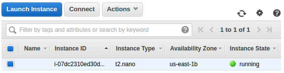
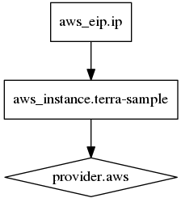
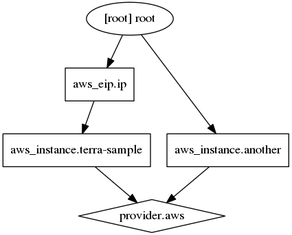
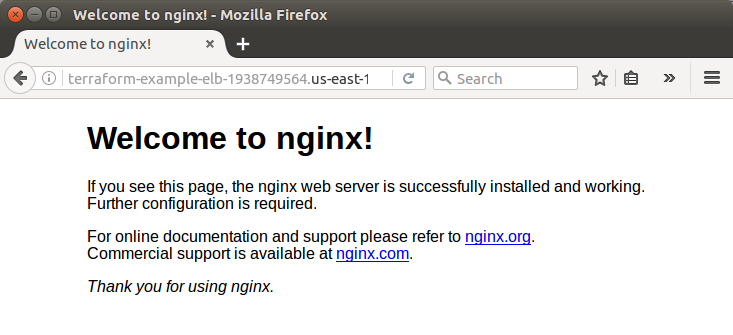
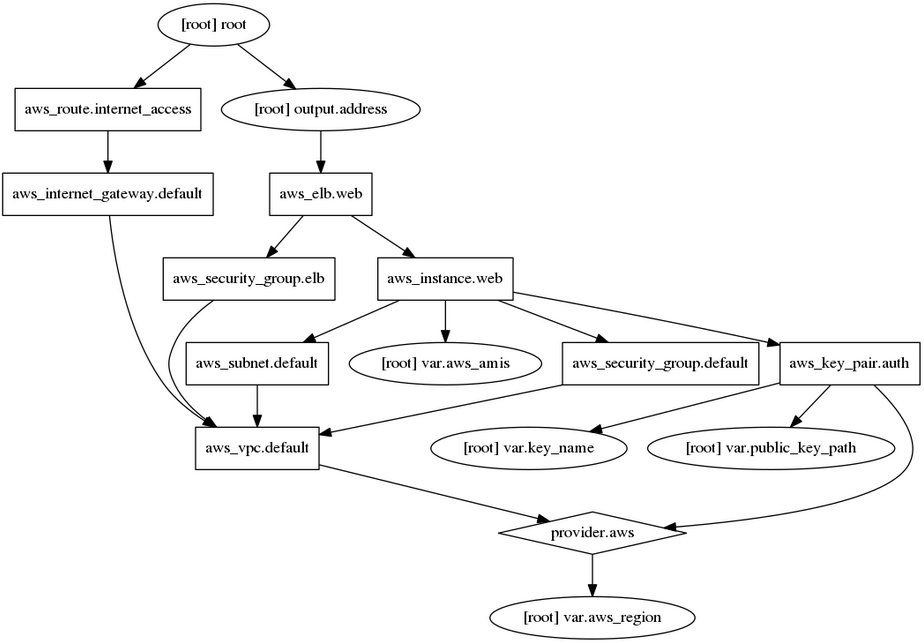

Introduction to Terraform with AWS elb & nginx
As an open source tool, Terraform provides a flexible abstraction of resources and providers.
While configuration management tools such as Chef, Puppet, and Ansible install and manage software on a machine that already exists, Terraform is not a configuration management tool, and it allows existing tooling to focus on their strengths: bootstrapping and initializing resources.
Terraform separates the planning phase from the execution phase, by using the concept of an execution plan.
Terraform is not intended to give low-level programmatic access (e.g. boto) to providers, but instead provides a high level syntax for describing how cloud resources and services should be created, provisioned, and combined. Terraform is very flexible, using a plugin-based model to support providers and provisioners, giving it the ability to support almost any service that exposes APIs.
Here are lists some concrete use cases for Terraform:
- Multi-Tier Applications: The most common 2-tier architecture is a pool of web servers that use a database tier. Additional tiers get added for API servers, caching servers, routing meshes, etc. This pattern is used because the tiers can be scaled independently and provide a separation of concerns.
Terraform is an ideal tool for building and managing these infrastructures. Each tier can be described as a collection of resources, and the dependencies between each tier are handled automatically; Terraform will ensure the database tier is available before the web servers are started and that the load balancers are aware of the web nodes. Each tier can then be scaled easily using Terraform by modifying a single count configuration value. Because the creation and provisioning of a resource is codified and automated, elastically scaling with load becomes trivial. - Self-Service Clusters: Terraform configurations can be shared within an organization enabling customer teams to use the configuration as a black box and use Terraform as a tool to manage their services.
- Software Demos: Software writers can provide a Terraform configuration to create, provision and bootstrap a demo on cloud providers like AWS.
- Disposable Environments: Using Terraform, the production environment can be codified and then shared with staging and dev. These configurations can be used to rapidly spin up new environments to test in, and then be easily disposed of.
- Resource Schedulers: There are a number of schedulers like Borg, Mesos, YARN, and Kubernetes.
- Multi-Cloud Deployment: Terraform is cloud-agnostic and allows a single configuration to be used to manage multiple providers, and to even handle cross-cloud dependencies. Terraform can be used to orchestrate an AWS and OpenStack cluster simultaneously, while enabling 3rd-party providers like Cloudflare and DNSimple to be integrated to provide CDN and DNS services.
- Software Defined Networking (SDN): Most SDN implementations have a control layer and infrastructure layer. Terraform can be used to codify the configuration for software defined networks. This configuration can then be used by Terraform to automatically setup and modify settings by interfacing with the control layer. This allows configuration to be versioned and changes to be automated. AWS VPC is one of the most commonly used SDN implementations, and can be configured by Terraform.
To install Terraform, find the appropriate package and download it. Terraform is packaged as a zip archive.
After downloading Terraform, unzip the package. Terraform runs as a single binary named terraform.
Make sure that the terraform binary is available on the PATH:
$ sudo cp terraform /usr/local/bin
We can verify the installation:
$ terraform
Usage: terraform [--version] [--help] <command> [args]
The available commands for execution are listed below.
The most common, useful commands are shown first, followed by
less common or more advanced commands. If you're just getting
started with Terraform, stick with the common commands. For the
other commands, please read the help and docs before usage.
Common commands:
apply Builds or changes infrastructure
console Interactive console for Terraform interpolations
...
With Terraform installed, it's time to build infrastructure using a minimal Terraform configuration file. We will be able to examine Terraform's execution plan before we deploy it to AWS.
We're going to write our first configuration now to launch a single AWS EC2 instance.
Terraform will automatically search for saved API credentials in ~/.aws/credentials:
[default] aws_access_key_id = B...T aws_secret_access_key = 8...Z
The configuration file should look like this in its simplest form:
provider "aws" {
region = "us-east-1"
}
resource "aws_instance" "terra-sample" {
ami = "ami-f4cc1de2"
instance_type = "t2.nano"
key_name = "einsteinish"
}
Save the contents to a file named terra-sample.tf. We need to make sure that there are no other *.tf files in our directory, since Terraform loads all of them.
The above configuration is designed to work on most EC2 accounts, with access to a default VPC. This is a complete configuration that Terraform is ready to apply.
The provider block is used to configure the named provider, in our case "aws." A provider is responsible for creating and managing resources. Multiple provider blocks can exist if a Terraform configuration is composed of multiple providers.
The resource block defines a resource that exists within the infrastructure. A resource might be a physical component such as an EC2 instance, or it can be a logical resource such as a Heroku application.
The resource block has three strings before opening the block: the resource type, the resource name, and the key_name.
In our example, the resource type is "aws_instance" and the resource name is "terra-sample." The prefix of the type maps to the provider. In our case "aws_instance" automatically tells Terraform that it is managed by the "aws" provider. In order to access an EC2 instance once it is created, we need to assign an AWS EC2 Key Pair at the time of instantiating the instance.
Within the resource block itself is configuration for that resource. This is dependent on each resource provider and is fully documented within our providers reference. For our EC2 instance, we specify an AMI for Ubuntu 16.04, and request a "t2.nano" instance.
Let's see what Terraform would do if we asked it to apply this configuration. In the same directory as the terra-sample.tf file we created, run terraform plan. We should see output similar to the following:
$ terraform plan
Refreshing Terraform state in-memory prior to plan...
The refreshed state will be used to calculate this plan, but will not be
persisted to local or remote state storage.
The Terraform execution plan has been generated and is shown below.
Resources are shown in alphabetical order for quick scanning. Green resources
will be created (or destroyed and then created if an existing resource
exists), yellow resources are being changed in-place, and red resources
will be destroyed. Cyan entries are data sources to be read.
Note: You didn't specify an "-out" parameter to save this plan, so when
"apply" is called, Terraform can't guarantee this is what will execute.
+ aws_instance.terra-sample
ami: "ami-f4cc1de2"
associate_public_ip_address: "<computed>"
availability_zone: "<computed>"
ebs_block_device.#: "<computed>"
ephemeral_block_device.#: "<computed>"
instance_state: "<computed>"
instance_type: "t2.nano"
ipv6_addresses.#: "<computed>"
key_name: "einsteinish"
network_interface_id: "<computed>"
placement_group: "<computed>"
private_dns: "<computed>"
private_ip: "<computed>"
public_dns: "<computed>"
public_ip: "<computed>"
root_block_device.#: "<computed>"
security_groups.#: "<computed>"
source_dest_check: "true"
subnet_id: "<computed>"
tenancy: "<computed>"
vpc_security_group_ids.#: "<computed>"
Plan: 1 to add, 0 to change, 0 to destroy.
terraform plan shows what changes Terraform will apply to our infrastructure given the current state of our infrastructure as well as the current contents of our configuration.
If terraform plan failed with an error, read the error message and fix the error that occurred. At this stage, it is probably a syntax error in the configuration.
The output format is similar to the diff format generated by tools such as Git. The output has a "+" next to "aws_instance.terra-sample", meaning that Terraform will create this resource. Beneath that, it shows the attributes that will be set. When the value displayed is <computed>, it means that the value won't be known until the resource is created.
The plan looks good, our configuration appears valid, so it's time to create real resources. Run terraform apply in the same directory as our terra-sample.tf, and watch it go! It will take a few minutes since Terraform waits for the EC2 instance to become available.
$ terraform apply aws_instance.terra-sample: Creating... ami: "" => "ami-f4cc1de2" associate_public_ip_address: "" => "<computed>" availability_zone: "" => "<computed>" ebs_block_device.#: "" => "<computed>" ephemeral_block_device.#: "" => "<computed>" instance_state: "" => "<computed>" instance_type: "" => "t2.nano" ipv6_addresses.#: "" => "<computed>" key_name: "" => "einsteinish" network_interface_id: "" => "<computed>" placement_group: "" => "<computed>" private_dns: "" => "<computed>" private_ip: "" => "<computed>" public_dns: "" => "<computed>" public_ip: "" => "<computed>" root_block_device.#: "" => "<computed>" security_groups.#: "" => "<computed>" source_dest_check: "" => "true" subnet_id: "" => "<computed>" tenancy: "" => "<computed>" vpc_security_group_ids.#: "" => "<computed>" aws_instance.terra-sample: Still creating... (10s elapsed) aws_instance.terra-sample: Still creating... (20s elapsed) aws_instance.terra-sample: Creation complete (ID: i-07dc2310ed30d6dba) Apply complete! Resources: 1 added, 0 changed, 0 destroyed. The state of your infrastructure has been saved to the path below. This state is required to modify and destroy your infrastructure, so keep it safe. To inspect the complete state use the `terraform show` command. State path:
Done! We can go to the AWS console and check the EC2 instance has been created:
Terraform also puts some state into the terraform.tfstate file by default.
This state file is extremely important; it maps various resource metadata to actual resource IDs so that Terraform knows what it is managing. This file must be saved and distributed to anyone who might run Terraform. It is generally recommended to setup remote state when working with Terraform. This will mean that any potential secrets stored in the state file, will not be checked into version control.
WE can inspect the state using terraform show:
$ terraform show aws_instance.terra-sample: id = i-07dc2310ed30d6dba ami = ami-f4cc1de2 associate_public_ip_address = true availability_zone = us-east-1b disable_api_termination = false ebs_block_device.# = 0 ebs_optimized = false ephemeral_block_device.# = 0 iam_instance_profile = instance_state = running instance_type = t2.nano ipv6_address_count = 0 ipv6_addresses.# = 0 key_name = einsteinish monitoring = false network_interface_id = eni-4b7915bc private_dns = ip-172-31-53-130.ec2.internal private_ip = 172.31.53.130 public_dns = ec2-54-144-127-106.compute-1.amazonaws.com public_ip = 54.144.127.106 root_block_device.# = 1 root_block_device.0.delete_on_termination = true root_block_device.0.iops = 100 root_block_device.0.volume_size = 8 root_block_device.0.volume_type = gp2 security_groups.# = 0 source_dest_check = true subnet_id = subnet-6ac90441 tags.% = 0 tenancy = default vpc_security_group_ids.# = 1 vpc_security_group_ids.3461207847 = sg-22897246
We've created our first infrastructure with Terraform: a single EC2 instance. Next, we're going to modify that resource, and see how Terraform handles change.
Infrastructure is continuously evolving, and Terraform was built to help manage and enact that change. As we change Terraform configurations, Terraform builds an execution plan that only modifies what is necessary to reach your desired state.
By using Terraform to change infrastructure, we can version control not only our configurations but also our state so we can see how the infrastructure evolved over time.
Let's modify the ami of our instance from Ubuntu 16.04 LTS AMI to Ubuntu 16.10 AMI (ami-b374d5a5):
provider "aws" {
region = "us-east-1"
}
resource "aws_instance" "terra-sample" {
ami = "ami-b374d5a5"
instance_type = "t2.nano"
key_name = "einsteinish"
}
We can see what Terraform will do with the change we made:
$ terraform plan
...
-/+ aws_instance.terra-sample
ami: "ami-f4cc1de2" => "ami-b374d5a5" (forces new resource)
associate_public_ip_address: "true" => "<computed>"
availability_zone: "us-east-1b" => "<computed>"
ebs_block_device.#: "0" => "<computed>"
ephemeral_block_device.#: "0" => "<computed>"
instance_state: "running" => "<computed>"
instance_type: "t2.nano" => "t2.nano"
ipv6_addresses.#: "0" => "<computed>"
key_name: "einsteinish" => "einsteinish"
network_interface_id: "eni-4b7915bc" => "<computed>"
placement_group: "" => "<computed>"
private_dns: "ip-172-31-53-130.ec2.internal" => "<computed>"
private_ip: "172.31.53.130" => "<computed>"
public_dns: "ec2-54-144-127-106.compute-1.amazonaws.com" => "<computed>"
public_ip: "54.144.127.106" => "<computed>"
root_block_device.#: "1" => "<computed>"
security_groups.#: "0" => "<computed>"
source_dest_check: "true" => "true"
subnet_id: "subnet-6ac90441" => "<computed>"
tenancy: "default" => "<computed>"
vpc_security_group_ids.#: "1" => "<computed>"
Plan: 1 to add, 0 to change, 1 to destroy.
The prefix "-/+" means that Terraform will destroy and recreate the resource, versus purely updating it in-place. While some attributes can do in-place updates (which are shown with a "~" prefix), AMI changing on EC2 instance requires a new resource. Terraform handles these details for you, and the execution plan makes it clear what Terraform will do.
Let's apply the change:
$ terraform apply aws_instance.terra-sample: Refreshing state... (ID: i-07dc2310ed30d6dba) aws_instance.terra-sample: Destroying... (ID: i-07dc2310ed30d6dba) aws_instance.terra-sample: Still destroying... (ID: i-07dc2310ed30d6dba, 10s elapsed) aws_instance.terra-sample: Still destroying... (ID: i-07dc2310ed30d6dba, 20s elapsed) aws_instance.terra-sample: Still destroying... (ID: i-07dc2310ed30d6dba, 30s elapsed) aws_instance.terra-sample: Still destroying... (ID: i-07dc2310ed30d6dba, 40s elapsed) aws_instance.terra-sample: Destruction complete aws_instance.terra-sample: Creating... ami: "" => "ami-b374d5a5" associate_public_ip_address: "" => "<computed>" availability_zone: "" => "<computed>" ebs_block_device.#: "" => "<computed>" ephemeral_block_device.#: "" => "<computed>" instance_state: "" => "<computed>" instance_type: "" => "t2.nano" ipv6_addresses.#: "" => "<computed>" key_name: "" => "einsteinish" network_interface_id: "" => "<computed>" placement_group: "" => "<computed>" private_dns: "" => "<computed>" private_ip: "" => "<computed>" public_dns: "" => "<computed>" public_ip: "" => "<computed>" root_block_device.#: "" => "<computed>" security_groups.#: "" => "<computed>" source_dest_check: "" => "true" subnet_id: "" => "<computed>" tenancy: "" => "<computed>" vpc_security_group_ids.#: "" => "<computed>" aws_instance.terra-sample: Still creating... (10s elapsed) aws_instance.terra-sample: Creation complete (ID: i-04fc1d12812148636) Apply complete! Resources: 1 added, 0 changed, 1 destroyed. The state of your infrastructure has been saved to the path below. This state is required to modify and destroy your infrastructure, so keep it safe. To inspect the complete state use the `terraform show` command. State path:
Login to the instance and then the release:
ubuntu@ip-172-31-62-33:~$ lsb_release -a No LSB modules are available. Distributor ID: Ubuntu Description: Ubuntu 16.10 Release: 16.10 Codename: yakkety
As the plan predicted, Terraform started by destroying our old instance, then creating the new one. We can use terraform show again to see the new properties associated with this instance.
In the next section we're going to destroy our infrastructure.
In this section, we're going to see how to completely destroy the Terraform-managed infrastructure.
Before destroying our infrastructure, we can use the plan command to see what resources Terraform will destroy:
$ terraform plan -destroy ... - aws_instance.terra-sample Plan: 0 to add, 0 to change, 1 to destroy.
With the -destroy flag, we're asking Terraform to plan a destroy, where all resources under Terraform management are destroyed. We can use this output to verify exactly what resources Terraform is managing and will destroy.
Let's destroy the infrastructure:
$ terraform destroy Do you really want to destroy? Terraform will delete all your managed infrastructure. There is no undo. Only 'yes' will be accepted to confirm. Enter a value: yes aws_instance.terra-sample: Refreshing state... (ID: i-04fc1d12812148636) aws_instance.terra-sample: Destroying... (ID: i-04fc1d12812148636) aws_instance.terra-sample: Still destroying... (ID: i-04fc1d12812148636, 10s elapsed) aws_instance.terra-sample: Still destroying... (ID: i-04fc1d12812148636, 20s elapsed) aws_instance.terra-sample: Still destroying... (ID: i-04fc1d12812148636, 30s elapsed) aws_instance.terra-sample: Still destroying... (ID: i-04fc1d12812148636, 40s elapsed) aws_instance.terra-sample: Destruction complete Destroy complete! Resources: 1 destroyed.
The terraform destroy command should ask us to verify that we really want to destroy the infrastructure. Terraform only accepts the literal "yes" as an answer as a safety mechanism. Once entered, Terraform will go through and destroy the infrastructure.
Just like with apply, Terraform is smart enough to determine what order things should be destroyed. In our case, we only had one resource, so there wasn't any ordering necessary. But in more complicated cases with multiple resources, Terraform will destroy in the proper order.
Up to this point, our example has only contained a single resource, however, real infrastructure has a diverse set of resources and resource types.
We're going to introduce resource dependencies, where we'll not only see a configuration with multiple resources for the first time, but also scenarios where resource parameters use information from other resources.
We'll improve our configuration by assigning an elastic IP to the EC2 instance we're managing. Modify our terra-sample.tf and add the following:
provider "aws" {
region = "us-east-1"
}
resource "aws_instance" "terra-sample" {
ami = "ami-b374d5a5"
instance_type = "t2.nano"
key_name = "einsteinish"
}
resource "aws_eip" "ip" {
instance = "${aws_instance.terra-sample.id}"
}
Note that we're building an "aws_eip" resource type. This resource type allocates and associates an elastic IP to an EC2 instance.
The only parameter for aws_eip is "instance" which is the EC2 instance to assign the IP to. For this value, we use an interpolation to use an attribute from the EC2 instance we managed earlier.
The syntax for this interpolation should be straightforward: it requests the "id" attribute from the "aws_instance.terra-sample" resource.
Run terraform plan to view the execution plan:
$ terraform plan
...
+ aws_eip.ip
allocation_id: "<computed>"
association_id: "<computed>"
domain: "<computed>"
instance: "${aws_instance.terra-sample.id}"
network_interface: "<computed>"
private_ip: "<computed>"
public_ip: "<computed>"
vpc: "<computed>"
+ aws_instance.terra-sample
ami: "ami-b374d5a5"
associate_public_ip_address: "<computed>"
availability_zone: "<computed>"
ebs_block_device.#: "<computed>"
ephemeral_block_device.#: "<computed>"
instance_state: "<computed>"
instance_type: "t2.nano"
ipv6_addresses.#: "<computed>"
key_name: "einsteinish"
network_interface_id: "<computed>"
placement_group: "<computed>"
private_dns: "<computed>"
private_ip: "<computed>"
public_dns: "<computed>"
public_ip: "<computed>"
root_block_device.#: "<computed>"
security_groups.#: "<computed>"
source_dest_check: "true"
subnet_id: "<computed>"
tenancy: "<computed>"
vpc_security_group_ids.#: "<computed>"
Plan: 2 to add, 0 to change, 0 to destroy.
Terraform will create two resources: the instance and the elastic IP. In the "instance" value for the "aws_eip", we can see the raw interpolation is still present. This is because this variable won't be known until the "aws_instance" is created. It will be replaced at apply-time.
Next, run terraform apply:
$ terraform apply aws_instance.terra-sample: Creating... ami: "" => "ami-b374d5a5" associate_public_ip_address: "" => "<computed>" availability_zone: "" => "<computed>" ebs_block_device.#: "" => "<computed>" ephemeral_block_device.#: "" => "<computed>" instance_state: "" => "<computed>" instance_type: "" => "t2.nano" ipv6_addresses.#: "" => "<computed>" key_name: "" => "einsteinish" network_interface_id: "" => "<computed>" placement_group: "" => "<computed>" private_dns: "" => "<computed>" private_ip: "" => "<computed>" public_dns: "" => "<computed>" public_ip: "" => "<computed>" root_block_device.#: "" => "<computed>" security_groups.#: "" => "<computed>" source_dest_check: "" => "true" subnet_id: "" => "<computed>" tenancy: "" => "<computed>" vpc_security_group_ids.#: "" => "<computed>" aws_instance.terra-sample: Still creating... (10s elapsed) aws_instance.terra-sample: Still creating... (20s elapsed) aws_instance.terra-sample: Creation complete (ID: i-0cd25097632bf9022) aws_eip.ip: Creating... allocation_id: "" => "<computed>" association_id: "" => "<computed>" domain: "" => "<computed>" instance: "" => "i-0cd25097632bf9022" network_interface: "" => "<computed>" private_ip: "" => "<computed>" public_ip: "" => "<computed>" vpc: "" => "<computed>" aws_eip.ip: Creation complete (ID: eipalloc-35aee604) Apply complete! Resources: 2 added, 0 changed, 0 destroyed. The state of your infrastructure has been saved to the path below. This state is required to modify and destroy your infrastructure, so keep it safe. To inspect the complete state use the `terraform show` command. State path:
Terraform creates the EC2 instance before the elastic IP address. Due to the interpolation earlier where the elastic IP requires the ID of the EC2 instance, Terraform is able to infer a dependency, and knows to create the instance first.
Most dependencies in Terraform are implicit: Terraform is able to infer dependencies based on usage of attributes of other resources.
Using this information, Terraform builds a graph of resources. This tells Terraform not only in what order to create resources, but also what resources can be created in parallel. In our example, since the IP address depended on the EC2 instance, they could not be created in parallel.
Implicit dependencies work well and are usually all we ever need. However, we can also specify explicit dependencies with the depends_on parameter which is available on any resource. For example, we could modify the "aws_eip" resource to the following, which effectively does the same thing and is redundant:
resource "aws_eip" "ip" {
instance = "${aws_instance.terra-sample.id}"
depends_on = ["aws_instance.terra-sample"]
}
If not sure for the dependency chain that Terraform is creating, we can use the terraform graph command to view the graph. This command outputs a dot-formatted graph which can be viewed with Graphviz.
$ terraform graph
digraph {
compound = "true"
newrank = "true"
subgraph "root" {
"[root] aws_eip.ip" [label = "aws_eip.ip", shape = "box"]
"[root] aws_instance.terra-sample" [label = "aws_instance.terra-sample", shape = "box"]
"[root] provider.aws" [label = "provider.aws", shape = "diamond"]
"[root] aws_eip.ip" -> "[root] aws_instance.terra-sample"
"[root] aws_instance.terra-sample" -> "[root] provider.aws"
}
}
$ terraform graph | dot -Tpng > graph.png

We can now augment the configuration with another EC2 instance. Because this doesn't rely on any other resource, it can be created in parallel to everything else.
Here is our tf file with two independent instances:
provider "aws" {
region = "us-east-1"
}
resource "aws_instance" "terra-sample" {
ami = "ami-b374d5a5"
instance_type = "t2.nano"
key_name = "einsteinish"
}
resource "aws_eip" "ip" {
instance = "${aws_instance.terra-sample.id}"
}
resource "aws_instance" "another" {
ami = "ami-b374d5a5"
instance_type = "t2.nano"
}
$ terraform graph | dot -Tpng > graph2.png

We see that nothing depends on this and that it will likely be created in parallel.
Provisioning is important for being able to bootstrap instances. As another reminder, it is not a replacement for configuration management. It is meant to simply bootstrap machines. If we use configuration management, we should use the provisioning as a way to bootstrap the configuration management tool.
Now let's see how to use provisioners to initialize instances when they're created.
If we need to do some initial setup on our instances, then provisioners let us upload files, run shell scripts, or install and trigger other software like configuration management tools, etc.
To define a provisioner, modify the resource block defining the "terra-sample" EC2 instance to look like the following:
provider "aws" {
region = "us-east-1"
}
resource "aws_instance" "terra-sample" {
ami = "ami-b374d5a5"
instance_type = "t2.nano"
key_name = "einsteinish"
provisioner "local-exec" {
command = "echo ${aws_instance.example.public_ip} > ip_address.txt"
}
}
This adds a provisioner block within the resource block. Multiple provisioner blocks can be added to define multiple provisioning steps. Terraform supports multiple provisioners, but for this example we are using the local-exec provisioner.
The local-exec provisioner executes a command locally on the machine running Terraform. We're using this provisioner versus the others so we don't have to worry about specifying any connection info right now.
Provisioners are only run when a resource is created. They are not a replacement for configuration management and changing the software of an already-running server, and are instead just meant as a way to bootstrap a server. For configuration management, we should use Terraform provisioning to invoke a real configuration management solution.
Make sure that our infrastructure is destroyed if it isn't already, then run apply:
$ terraform destroy aws_instance.terra-sample: Creating... ami: "" => "ami-b374d5a5" instance_type: "" => "t2.nano" key_name: "" => "einsteinish" source_dest_check: "" => "true" aws_instance.terra-sample: Still creating... (10s elapsed) aws_instance.terra-sample: Creation complete (ID: i-09ba39b1cbda14d92) aws_eip.ip: Creating... instance: "" => "i-09ba39b1cbda14d92" aws_eip.ip: Creation complete (ID: eipalloc-6cc48c5d) Apply complete! Resources: 2 added, 0 changed, 0 destroyed.
Let's first extract our access key, secret key, and region into a few variables. Create another file variables.tf:
variable "access_key" {}
variable "secret_key" {}
variable "region" {
default = "us-east-1"
}
This defines three variables within your Terraform configuration. The first two have empty blocks {}. The third sets a default. If a default value is set, the variable is optional. Otherwise, the variable is required. If we run terraform plan now, Terraform will prompt us for the values for unset string variables:
$ terraform plan var.access_key Enter a value: AKI...WUQ var.secret_key Enter a value: 3qv...DSY
Next, replace the AWS provider configuration with the following:
provider "aws" {
access_key = "${var.access_key}"
secret_key = "${var.secret_key}"
region = "${var.region}"
}
This uses more interpolations, this time prefixed with var. which tells Terraform that we're accessing variables. This configures the AWS provider with the given variables.
There are multiple ways to assign variables. Below is also the order in which variable values are chosen. The following is the descending order of precedence in which variables are considered.
We can set variables directly on the command-line with the -var flag. Any command in Terraform that inspects the configuration accepts this flag, such as apply, plan, and refresh:
$ terraform plan \ -var 'access_key=foo' \ -var 'secret_key=bar'
Once again, setting variables this way will not save them, and they'll have to be input repeatedly as commands are executed.
To persist variable values, create a file and assign variables within this file. Create a file named terraform.tfvars with the following contents:
access_key = "foo" secret_key = "bar"
If a terraform.tfvars file is present in the current directory, Terraform automatically loads it to populate variables. If the file is named something else, we can use the -var-file flag directly to specify a file. These files are the same syntax as Terraform configuration files. And like Terraform configuration files, these files can also be JSON.
We don't recommend saving usernames and password to version control, But you can create a local secret variables file and use -var-file to load it.
We can use multiple -var-file arguments in a single command, with some checked in to version control and others not checked in. For example:
$ terraform plan \ -var-file="secret.tfvars" \ -var-file="production.tfvars"
We can provide our credentials via the AWS_ACCESS_KEY_ID and AWS_SECRET_ACCESS_KEY, environment variables, representing your AWS Access Key and AWS Secret Key, respectively. The AWS_DEFAULT_REGION and AWS_SESSION_TOKEN environment variables are also used, if applicable:
provider "aws" {}
Usage:
$ export AWS_ACCESS_KEY_ID="anaccesskey" $ export AWS_SECRET_ACCESS_KEY="asecretkey" $ export AWS_DEFAULT_REGION="us-west-2"
We can use an AWS credentials file to specify our credentials. The default location is $HOME/.aws/credentials on Linux. If we fail to detect credentials inline, or in the environment, Terraform will check this location. We can optionally specify a different location in the configuration by providing the shared_credentials_file attribute, or in the environment with the AWS_SHARED_CREDENTIALS_FILE variable:
provider "aws" {
region = "us-east-1"
shared_credentials_file = "/home/k/.aws/credentials"
}
We can use output variables as a way to organize data to be easily queried and shown back to the Terraform user.
When building potentially complex infrastructure, Terraform stores hundreds or thousands of attribute values for all our resources. But as a user of Terraform, we may only be interested in a few values of importance, such as a load balancer IP, VPN address, etc.
Outputs are a way to tell Terraform what data is important. This data is outputted when apply is called, and can be queried using the terraform output command.
Let's define an output to show us the public IP address of the elastic IP address that we create. Add this to any of our *.tf files:
output "ip" {
value = "${aws_eip.ip.public_ip}"
}
This defines an output variable named "ip". The value field specifies what the value will be, and almost always contains one or more interpolations, since the output data is typically dynamic. In this case, we're outputting the public_ip attribute of the elastic IP address.
We run terraform apply to populate the output. This only needs to be done once after the output is defined. The apply output should change slightly. At the end we should see this:
$ terraform apply ... Apply complete! Resources: 0 added, 0 changed, 0 destroyed. Outputs: ip = 50.17.232.209
apply highlights the outputs. We can also query the outputs after apply-time using terraform output:
$ terraform output ip 50.17.232.209
AMIs are specific to the region that is in use. One option is to just ask the user to input the proper AMI for the region, but Terraform can do better than that with maps.
Maps are a way to create variables that are lookup tables. An example will show this best. Let's extract our AMIs into a map and add support for the us-west-2 region as well:
variable "amis" {
type = "map"
default = {
"us-east-1" = "ami-b374d5a5"
"us-west-2" = "ami-4b32be2b"
}
}
A variable can have a map type assigned explicitly, or it can be implicitly declared as a map by specifying a default value that is a map. The above demonstrates both.
Then, replace the aws_instance with the following:
resource "aws_instance" "example" {
ami = "${lookup(var.amis, var.region)}"
instance_type = "t2.micro"
}
This introduces a new type of interpolation: a function call. The lookup function does a dynamic lookup in a map for a key. The key is "var.region", which specifies that the value of the region variables is the key.
This provides a template for running a simple two-tier architecture on Amazon Web Services. The premise is that we have stateless app servers running behind an ELB serving traffic.
To simplify the example, it intentionally ignores deploying and getting our application onto the servers. However, we could do so either via provisioners and a configuration management tool, or by pre-baking configured AMIs with Packer.
After we run terraform apply on this configuration, it will automatically output the DNS address of the ELB. After our instance registers, this should respond with the default Nginx web page.
As with all the examples, just copy and paste the example and run terraform apply to see it work.
We can get the example from aws-two-tier.
$ terraform apply var.key_name Desired name of AWS key pair Enter a value: ~/.ssh/einsteinish.pem var.public_key_path Path to the SSH public key to be used for authentication. Ensure this keypair is added to your local SSH agent so provisioners can connect. Example: ~/.ssh/terraform.pub Enter a value: ~/.ssh/id_rsa.pub aws_vpc.default: Refreshing state... (ID: vpc-adc2e1ca) aws_key_pair.auth: Refreshing state... (ID: ~/.ssh/einsteinish.pem) aws_security_group.default: Refreshing state... (ID: sg-39df7c42) aws_internet_gateway.default: Refreshing state... (ID: igw-552bcb32) aws_security_group.elb: Refreshing state... (ID: sg-a1d87bda) aws_subnet.default: Refreshing state... (ID: subnet-b5750bd2) aws_route.internet_access: Refreshing state... (ID: r-rtb-74a071121080289494) aws_vpc.default: Creating... assign_generated_ipv6_cidr_block: "" => "false" cidr_block: "" => "10.0.0.0/16" default_network_acl_id: "" => "<computed>" default_route_table_id: "" => "<computed>" default_security_group_id: "" => "<computed>" dhcp_options_id: "" => "<computed>" enable_classiclink: "" => "<computed>" enable_dns_hostnames: "" => "<computed>" enable_dns_support: "" => "true" instance_tenancy: "" => "<computed>" ipv6_association_id: "" => "<computed>" ipv6_cidr_block: "" => "<computed>" main_route_table_id: "" => "<computed>" aws_key_pair.auth: Creating... fingerprint: "" => "<computed>" key_name: "" => "~/.ssh/einsteinish.pem" public_key: "" => "ssh-rsa AA...F9PR k@laptop" aws_key_pair.auth: Creation complete (ID: ~/.ssh/einsteinish.pem) aws_vpc.default: Creation complete (ID: vpc-d01a16b6) aws_internet_gateway.default: Creating... vpc_id: "" => "vpc-d01a16b6" aws_subnet.default: Creating... assign_ipv6_address_on_creation: "" => "false" availability_zone: "" => "<computed>" cidr_block: "" => "10.0.1.0/24" ipv6_cidr_block_association_id: "" => "<computed>" map_public_ip_on_launch: "" => "true" vpc_id: "" => "vpc-d01a16b6" aws_security_group.default: Creating... description: "" => "Used in the terraform" egress.#: "" => "1" egress.482069346.cidr_blocks.#: "" => "1" egress.482069346.cidr_blocks.0: "" => "0.0.0.0/0" egress.482069346.from_port: "" => "0" egress.482069346.ipv6_cidr_blocks.#: "" => "0" egress.482069346.prefix_list_ids.#: "" => "0" egress.482069346.protocol: "" => "-1" egress.482069346.security_groups.#: "" => "0" egress.482069346.self: "" => "false" egress.482069346.to_port: "" => "0" ingress.#: "" => "2" ingress.2165049311.cidr_blocks.#: "" => "1" ingress.2165049311.cidr_blocks.0: "" => "10.0.0.0/16" ingress.2165049311.from_port: "" => "80" ingress.2165049311.ipv6_cidr_blocks.#: "" => "0" ingress.2165049311.protocol: "" => "tcp" ingress.2165049311.security_groups.#: "" => "0" ingress.2165049311.self: "" => "false" ingress.2165049311.to_port: "" => "80" ingress.2541437006.cidr_blocks.#: "" => "1" ingress.2541437006.cidr_blocks.0: "" => "0.0.0.0/0" ingress.2541437006.from_port: "" => "22" ingress.2541437006.ipv6_cidr_blocks.#: "" => "0" ingress.2541437006.protocol: "" => "tcp" ingress.2541437006.security_groups.#: "" => "0" ingress.2541437006.self: "" => "false" ingress.2541437006.to_port: "" => "22" name: "" => "terraform_example" owner_id: "" => "<computed>" vpc_id: "" => "vpc-d01a16b6" aws_security_group.elb: Creating... description: "" => "Used in the terraform" egress.#: "" => "1" egress.482069346.cidr_blocks.#: "" => "1" egress.482069346.cidr_blocks.0: "" => "0.0.0.0/0" egress.482069346.from_port: "" => "0" egress.482069346.ipv6_cidr_blocks.#: "" => "0" egress.482069346.prefix_list_ids.#: "" => "0" egress.482069346.protocol: "" => "-1" egress.482069346.security_groups.#: "" => "0" egress.482069346.self: "" => "false" egress.482069346.to_port: "" => "0" ingress.#: "" => "1" ingress.2214680975.cidr_blocks.#: "" => "1" ingress.2214680975.cidr_blocks.0: "" => "0.0.0.0/0" ingress.2214680975.from_port: "" => "80" ingress.2214680975.ipv6_cidr_blocks.#: "" => "0" ingress.2214680975.protocol: "" => "tcp" ingress.2214680975.security_groups.#: "" => "0" ingress.2214680975.self: "" => "false" ingress.2214680975.to_port: "" => "80" name: "" => "terraform_example_elb" owner_id: "" => "<computed>" vpc_id: "" => "vpc-d01a16b6" aws_internet_gateway.default: Creation complete (ID: igw-4c24e02a) aws_route.internet_access: Creating... destination_cidr_block: "" => "0.0.0.0/0" destination_prefix_list_id: "" => "<computed>" egress_only_gateway_id: "" => "<computed>" gateway_id: "" => "igw-4c24e02a" instance_id: "" => "<computed>" instance_owner_id: "" => "<computed>" nat_gateway_id: "" => "<computed>" network_interface_id: "" => "<computed>" origin: "" => "<computed>" route_table_id: "" => "rtb-5d0b2f24" state: "" => "<computed>" aws_subnet.default: Creation complete (ID: subnet-b826f5f0) aws_route.internet_access: Creation complete (ID: r-rtb-5d0b2f241080289494) aws_security_group.elb: Creation complete (ID: sg-7bfcd904) aws_security_group.default: Creation complete (ID: sg-b7fcd9c8) aws_instance.web: Creating... ami: "" => "ami-f4cc1de2" associate_public_ip_address: "" => "<computed>" availability_zone: "" => "<computed>" ebs_block_device.#: "" => "<computed>" ephemeral_block_device.#: "" => "<computed>" instance_state: "" => "<computed>" instance_type: "" => "t2.nano" ipv6_addresses.#: "" => "<computed>" key_name: "" => "~/.ssh/einsteinish.pem" network_interface_id: "" => "<computed>" placement_group: "" => "<computed>" private_dns: "" => "<computed>" private_ip: "" => "<computed>" public_dns: "" => "<computed>" public_ip: "" => "<computed>" root_block_device.#: "" => "<computed>" security_groups.#: "" => "<computed>" source_dest_check: "" => "true" subnet_id: "" => "subnet-b826f5f0" tenancy: "" => "<computed>" vpc_security_group_ids.#: "" => "1" vpc_security_group_ids.1255873682: "" => "sg-b7fcd9c8" aws_instance.web: Still creating... (10s elapsed) aws_instance.web: Still creating... (20s elapsed) aws_instance.web: Provisioning with 'remote-exec'... aws_instance.web (remote-exec): Connecting to remote host via SSH... aws_instance.web (remote-exec): Host: 52.201.230.107 aws_instance.web (remote-exec): User: ubuntu aws_instance.web (remote-exec): Password: false aws_instance.web (remote-exec): Private key: false aws_instance.web (remote-exec): SSH Agent: true aws_instance.web: Still creating... (30s elapsed) aws_instance.web: Still creating... (40s elapsed) ... aws_instance.web (remote-exec): Processing triggers for ufw (0.35-0ubuntu2) ... aws_instance.web (remote-exec): sudo: unable to resolve host ip-10-0-1-102 aws_instance.web: Creation complete (ID: i-096c9cb80c3cc55a5) aws_elb.web: Creating... availability_zones.#: "" => "<computed>" connection_draining: "" => "false" connection_draining_timeout: "" => "300" cross_zone_load_balancing: "" => "true" dns_name: "" => "<computed>" health_check.#: "" => "<computed>" idle_timeout: "" => "60" instances.#: "" => "1" instances.281684789: "" => "i-096c9cb80c3cc55a5" internal: "" => "<computed>" listener.#: "" => "1" listener.3057123346.instance_port: "" => "80" listener.3057123346.instance_protocol: "" => "http" listener.3057123346.lb_port: "" => "80" listener.3057123346.lb_protocol: "" => "http" listener.3057123346.ssl_certificate_id: "" => "" name: "" => "terraform-example-elb" security_groups.#: "" => "1" security_groups.3201328540: "" => "sg-7bfcd904" source_security_group: "" => "<computed>" source_security_group_id: "" => "<computed>" subnets.#: "" => "1" subnets.3949924399: "" => "subnet-b826f5f0" zone_id: "" => "<computed>" aws_elb.web: Still creating... (10s elapsed) aws_elb.web: Creation complete (ID: terraform-example-elb) Apply complete! Resources: 9 added, 0 changed, 0 destroyed. The state of your infrastructure has been saved to the path below. This state is required to modify and destroy your infrastructure, so keep it safe. To inspect the complete state use the `terraform show` command. State path: Outputs: address = terraform-example-elb-1938749564.us-east-1.elb.amazonaws.com
We can check our nginx web server is running:

Here are the files used.
variables.tf:
variable "key_name" {
description = "Desired name of AWS key pair"
}
variable "aws_region" {
description = "AWS region to launch servers."
default = "us-east-1"
}
# Ubuntu Precise 16.04 LTS (x64)
variable "aws_amis" {
default = {
us-east-1 = "ami-f4cc1de2"
us-east-2 = "ami-fcc19b99"
us-west-1 = "ami-16efb076"
us-west-2 = "ami-a58d0dc5"
}
}
variables.tf:
output "address" {
value = "${aws_elb.web.dns_name}"
}
main.tf:
# Specify the provider and access details
provider "aws" {
region = "${var.aws_region}"
}
# Create a VPC to launch our instances into
resource "aws_vpc" "default" {
cidr_block = "10.0.0.0/16"
}
# Create an internet gateway to give our subnet access to the outside world
resource "aws_internet_gateway" "default" {
vpc_id = "${aws_vpc.default.id}"
}
# Grant the VPC internet access on its main route table
resource "aws_route" "internet_access" {
route_table_id = "${aws_vpc.default.main_route_table_id}"
destination_cidr_block = "0.0.0.0/0"
gateway_id = "${aws_internet_gateway.default.id}"
}
# Create a subnet to launch our instances into
resource "aws_subnet" "default" {
vpc_id = "${aws_vpc.default.id}"
cidr_block = "10.0.1.0/24"
map_public_ip_on_launch = true
}
# A security group for the ELB so it is accessible via the web
resource "aws_security_group" "elb" {
name = "terraform_example_elb"
description = "Used in the terraform"
vpc_id = "${aws_vpc.default.id}"
# HTTP access from anywhere
ingress {
from_port = 80
to_port = 80
protocol = "tcp"
cidr_blocks = ["0.0.0.0/0"]
}
# outbound internet access
egress {
from_port = 0
to_port = 0
protocol = "-1"
cidr_blocks = ["0.0.0.0/0"]
}
}
# Our default security group to access
# the instances over SSH and HTTP
resource "aws_security_group" "default" {
name = "terraform_example"
description = "Used in the terraform"
vpc_id = "${aws_vpc.default.id}"
# SSH access from anywhere
ingress {
from_port = 22
to_port = 22
protocol = "tcp"
cidr_blocks = ["0.0.0.0/0"]
}
# HTTP access from the VPC
ingress {
from_port = 80
to_port = 80
protocol = "tcp"
cidr_blocks = ["10.0.0.0/16"]
}
# outbound internet access
egress {
from_port = 0
to_port = 0
protocol = "-1"
cidr_blocks = ["0.0.0.0/0"]
}
}
resource "aws_elb" "web" {
name = "terraform-example-elb"
subnets = ["${aws_subnet.default.id}"]
security_groups = ["${aws_security_group.elb.id}"]
instances = ["${aws_instance.web.id}"]
listener {
instance_port = 80
instance_protocol = "http"
lb_port = 80
lb_protocol = "http"
}
}
resource "aws_key_pair" "auth" {
key_name = "${var.key_name}"
public_key = "${file(var.public_key_path)}"
}
resource "aws_instance" "web" {
# The connection block tells our provisioner how to
# communicate with the resource (instance)
connection {
# The default username for our AMI
user = "ubuntu"
# The connection will use the local SSH agent for authentication.
}
instance_type = "t2.nano"
# Lookup the correct AMI based on the region
# we specified
ami = "${lookup(var.aws_amis, var.aws_region)}"
# The name of our SSH keypair we created above.
key_name = "${aws_key_pair.auth.id}"
# Our Security group to allow HTTP and SSH access
vpc_security_group_ids = ["${aws_security_group.default.id}"]
# We're going to launch into the same subnet as our ELB. In a production
# environment it's more common to have a separate private subnet for
# backend instances.
subnet_id = "${aws_subnet.default.id}"
# We run a remote provisioner on the instance after creating it.
# In this case, we just install nginx and start it. By default,
# this should be on port 80
provisioner "remote-exec" {
inline = [
"sudo apt-get -y update",
"sudo apt-get -y install nginx",
"sudo service nginx start",
]
}
}
Why we use Terraform and not Chef, Puppet, Ansible, SaltStack, or CloudFormation.
Ph.D. / Golden Gate Ave, San Francisco / Seoul National Univ / Carnegie Mellon / UC Berkeley / DevOps / Deep Learning / Visualization